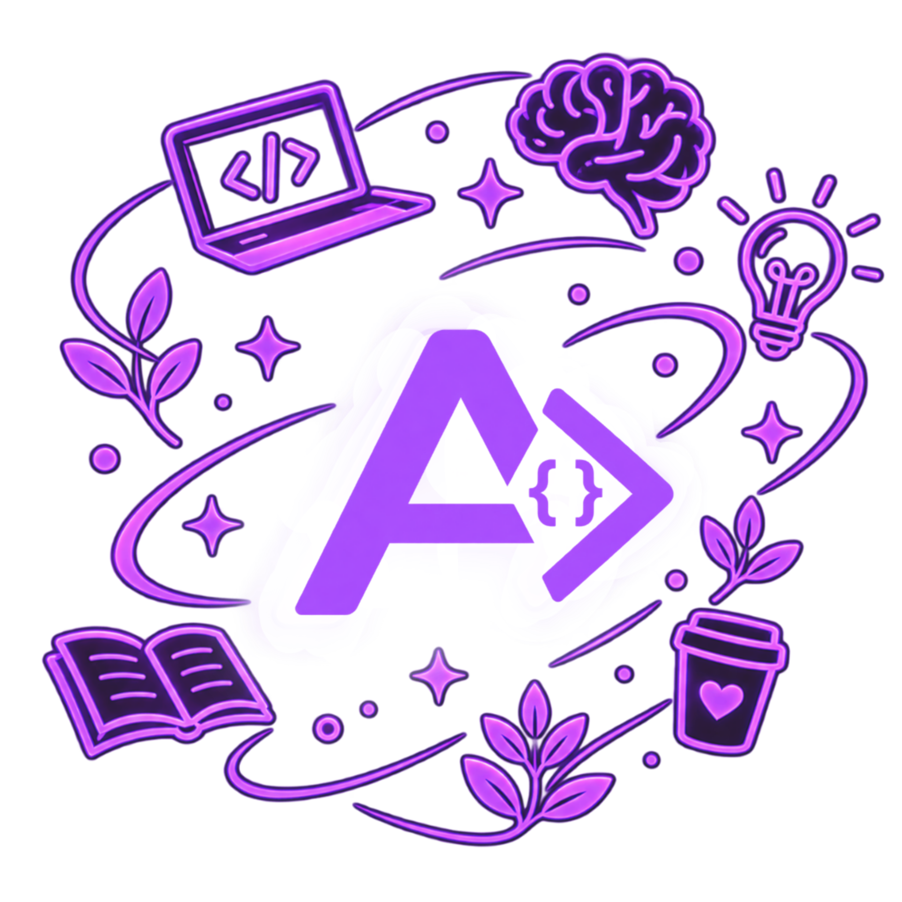

I'm a Brazilian developer with a lifelong curiosity about technology. Right after high school, I decided to turn that interest into a career by pursuing a degree in Systems Analysis and Development.
Having worked as a graphic designer, I naturally gravitated toward front-end development, where creativity and code come together. But during my studies, I also fell in love with back-end development — the logic, problem-solving, and everything happening behind the scenes.
I eventually realized that I love the challenge of both worlds: creating the experience people see and building everything that makes it work.
For me, development is where creativity meets logic.
On this website, you can explore more about my academic journey and, in the Projects section, discover some of my favorite projects and what I've created along the way.
